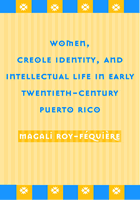

<body bgcolor="#FFFFFF" text="#000000" link="#0000FF" vlink="#CC0000" alink="#CC0000"><center><hr width="350" size="1" align="center" noshade>A feminist inquiry into the rhetoric of Puerto Rican national identity in the early twentieth century<hr width="350" size="1" align="center" noshade><p><a href="https://cdcshoppingcart.uchicago.edu/Cart/ChicagoBook.aspx?ISBN=9781592132300&&PRESS=temple" target="_top">Buy this book!</a> | <a href="https://cdcshoppingcart.uchicago.edu/Cart/Cart.aspx?PRESS=temple" target="_top">View Cart</a> | <a href="https://cdcshoppingcart.uchicago.edu/Cart/Cart.aspx?PRESS=temple" target="_top">Check Out</a></p><p></p></center><!--none//--><h1>Women, Creole Identity, and Intellectual Life in Early Twentieth-Century Puerto Rico</h1>
<h3>Magali Roy-Féquière</h3>
<P>cloth 1-59213-230-8 $85.50, Feb 04, <FONT COLOR=#990033>Available</FONT>
<br>paper 1-59213-231-6 $31.95, Feb 04, <FONT COLOR=#990033>Available</FONT>
<BR> 328 pp
6.875x10
8&nbsp;halftones
</P><BLOCKQUOTE><I>"An illuminating and sorely needed reconsideration of the most influential of modern Puerto Rican literary circles. Roy-Féquière confronts the profound implications of the racist discourse of this group. Her most brilliant contribution lies in her careful
unpacking of Puerto Rican conservative feminism, evident in the group's women intellectuals. Roy-Féquière shows how gender discourse was complicitous with the racial discourse deployed by the </i>Generación del Treinta<i>. Roy-Féquière's critique will challenge and enrich our understanding of gender and the place of women in the history of Puerto Rican and Caribbean elite culture."</i>
<br>&#151<b>Licia Fiol-Matta</b>, Lehman College, City University of New York and author of <i>A Queer Mother for the Nation: The State and Gabriela Mistral</i><i></I></BLOCKQUOTE>
<p>In this book, Magali Roy-Féquière casts new light on the <i>Generación del Treinta</i>, a group of Creole intellectuals who situated themselves as the voice of a new cultural nationalism in Puerto Rico. Through a feminist lens, she focuses on the interlocking themes of nationalism, gender, class, and race in the articulation of early twentieth century Puerto Rican identity.
<p>Roy-Féquière's discussion revolves around the affirmations and contradictions of the female intelligentsia, a cultural elite that sought to overcome American cultural hegemony by linking Puerto Rican identity to a white Spanish ethnic heritage, all the while negotiating their own precarious status within the male-dominated professional and intellectual spheres.
<p>The author also highlights the role of Margot Arce, a major essayist and intellectual who promoted this racially inflected discourse in her literary criticism. Arce's case parallels the thrust of the book in revealing the ideological alliances and tradeoffs made by female intellectuals in their pursuit of a unified sense of national identity in a racially heterogeneous and culturally diverse society.
<BR>&nbsp;<h2>Excerpt</h2><P>Excerpt available at <a href="http://www.temple.edu/tempress">www.temple.edu/tempress</a></p>
<BR>&nbsp;<h2>Reviews</h2>
<p><i>"</i>Women, Creole Identity, and Intellectual Life in Early Twentieth-Century Puerto Rico<i> is a superb book. It will fill a niche that has been neglected in the past. Roy-Féquière looks at national identity as an intellectual construct formulated by a besieged generation and establishes an important paradigm of the ideology of intellectuals since and after the </i>Generación del Treinta<i>. She connects literature with other sites of production of Puerto Rican national discourse, and shows very effectively how gender is subsumed in this nationalist discourse."</i>
<br>&#151<b>Marvette Pérez</b>, Curator, Latino History and Culture, National Museum of American History, Smithsonian Institution
<p><i>"[An] extremely well-documented, in-depth study...a valuable contribution to Puerto Rican scholarship."</i>
<br>&#151<b><i>Multicultural Review</i></b>
<p><i>"[S]o thorough and rigorous are her analyses, and so beautifully are they made to yield a rich, nuanced portrait of the period, that it is difficult to see how else this story could have been told. Roy-Féquière's study raises the bar for all of us who are interested in the literary and intellectual history of the region."</i>
<br>&#151<b><i>The Journal of American Ethic History</i></b>
<p><i>"</i>Women, Creole Identity and Intellectual Life in Early Twentieth-Century Puerto Rico<i> offers a superb analysis of how white, male, Creole intellectuals have tended to shun nonwhite and lower-class women from their nationalist discourse."</i>
<br>&#151<b><i><a href="http://muse.jhu.edu/journals/latin_american_research_review/v040/40.3duany.html" target="new">Latin American Research Review</a></i></b>
<p><i>"[A] nuanced interpretation of what an influential group of the academic elite in Puerto Rico considered foundational...a welcome addition not only to Puerto Rican scholarship but also to that scholarship's regional and global connections to the fields of Latin American and Caribbean studies."</i>
<br>&#151<b><i>African American Review</i></b>
<P><i>"Imaginative and well-written, Roy-Fequiere’s analysis promises to fascinate and challenge students of Caribbean/Puerto Rican culture and history, gender and race studies. This is a must-have, must-read book for anyone interested in the Caribbean." </i> <br>&#151<b><i>Centro Journal</i></b>
<P><i>"This book is a welcome addition to the emerging literature on the intersections of gender, race and class in modern Latin American and the Caribbean. It effectively straddles the boundaries between history and literary criticism, and it consistently demonstrates how literature is a product of social relations, historical change, and conflict...The result is a sweeping intellectual and cultural history of twentieth century Puerto Rico." </i><br>&#151 <b><i>Hispanic American Historical Review</i></b>
<BR>&nbsp;<h2>Contents</h2><P>
<p>Acknowledgments
<br>Introduction
<br>1. Nationalism Revisited: Deciphering the Creole Imaginary
<br>2. Compromising Positions: Reconstituting the Creole Gender Hierarchy
<br>3. Professional Women and the Refashioning of the Self
<br>Photograph Gallery
<br>4. The New Creolism: Three Responses to Pedreira
<br>5. The Nation as Male Fantasy: Emilio S. Belaval's <i>Los Cuentos de la Universidad</i>
<br>6. A Brave New (Discursive) World: María Cadilla de Martínez's <i>Milestones of the Race</i>
<br>7. <i>Negrismo</i>, Literary Criticism, and the Discourses of White Supremacy
<br>8. Speaking For and Speaking With: The Limits of <i>Negrismo</i>'s Cultural Discourse
<br>Notes
<br>Index
</P><BR>&nbsp;<H2>About the Author(s)</H2>
<P><b>Magali Roy-Féquière</b> is Associate Professor of Gender and Women's Studies at Knox College.</P>
<BR><H2>Subject Categories</H2>
<p><A HREF="/tempress/latin.html" TARGET="_top">Latin American/Caribbean Studies</a>
<BR><A HREF="/tempress/women.html" TARGET="_top">Women's Studies</a>
<BR><A HREF="/tempress/race.html" TARGET="_top">Race and Ethnicity</a>
</p>
<BR><h2 class="inpageheading">In the series</H2>
<P><I><a href="http://www.temple.edu/tempress/puerto_rican.html" onMouseOver="window.status='Click for other books in this series!'; return true;" onMouseOut="window.status=''; return true;" target="_top">Puerto Rican Studies</a></i>, edited by Luz del Alba Acevedo, Juan Flores, and Emilio Pantojas-García.
</p><p>The objective of <i>Puerto Rican Studies</i>, edited by Luz del Alba Acevedo, Juan Flores, and Emilio Pantojas-García, is to bring to publication work on the Puerto Rican experience that is of interest to a wide range of audiences beyond the fields of Puerto Rican and ethnic studies, as well as to provide new insights into other interdisciplinary fields such as cultural studies, women's studies, and urban studies. The series provides a forum for young, creative and daring scholars venturing into nontraditional ways of dealing with issues in Puerto Rican studies. The editors are concerned with producing work that will appeal to the wider North American and English-speaking audiences reaching scholars, writers, activists, feminists, and intellectually curious people throughout the hemisphere and Europe.</p>
<p align="center"><a href="https://cdcshoppingcart.uchicago.edu/Cart/ChicagoBook.aspx?ISBN=9781592132300&&PRESS=temple" target="_top">Buy this book!</a> | <a href="https://cdcshoppingcart.uchicago.edu/Cart/Cart.aspx?PRESS=temple" target="_top">View Cart</a> | <a href="https://cdcshoppingcart.uchicago.edu/Cart/Cart.aspx?PRESS=temple" target="_top">Check Out</a></p><p><font face="Arial" size="1"><a href="copyright.html" onMouseOver="window.status='Web Copyright Policy';return true;" onMouseOut="window.status=''" title="Web Copyright Policy">&copy;</a> 2015 <a href="http://www.temple.edu" target="new" onMouseOver="window.status='Link to Temple University home page';return true;" onMouseOut="window.status=''" title="Link to Temple University home page">Temple University</a>. All Rights Reserved. http://www.temple.edu/tempress/titles/1382_reg.html</font></p>